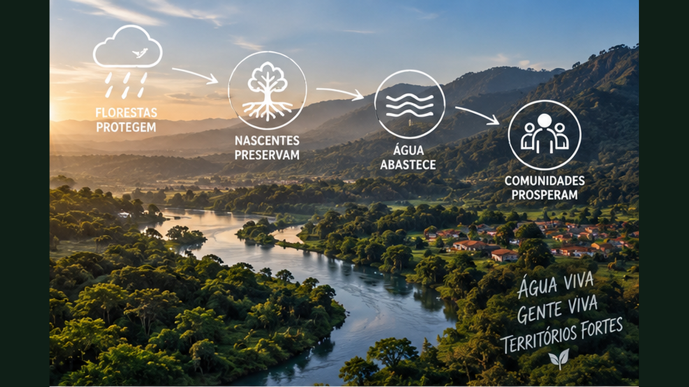
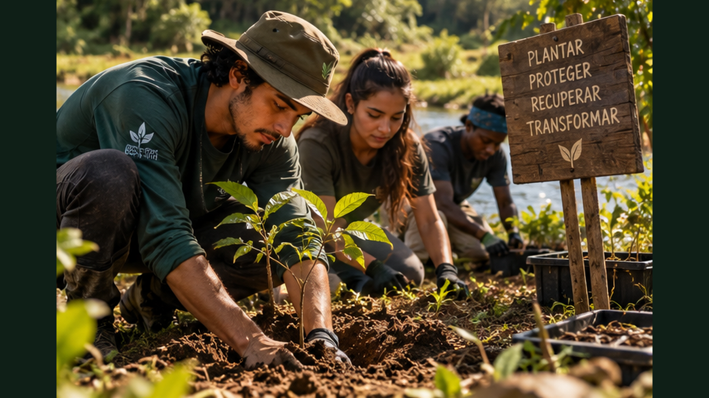

Aprenda a compreender, diagnosticar e proteger nascentes conectando água, solo, floresta, restauração e participação comunitária.
6 módulos24 aulasProjeto de 12 meses
0 de 24 aulas concluídas
Proteger a nascente é cuidar do território que alimenta a água
O curso acompanha o caminho completo: ciclo da água, bacia hidrográfica, floresta, diagnóstico, recuperação, monitoramento comunitário e construção de um plano de proteção de 12 meses.

01
Nascentes e o caminho da água
Entenda de onde a água vem, como circula no território e por que uma nascente depende de muito mais que seu ponto de saída.
Aula 01
O que é uma nascente
Uma nascente é uma manifestação da água subterrânea na superfície. A chuva infiltra no solo, ocupa poros e fraturas e pode alimentar aquíferos rasos ou profundos. Quando condições de relevo e geologia fazem essa água emergir, surge uma nascente. Por isso, proteger apenas alguns metros ao redor do olho d’água pode ser insuficiente: o funcionamento depende da área que recebe e conduz água até aquele ponto.
A vazão também pode variar ao longo do ano. Algumas nascentes são perenes; outras diminuem ou interrompem fluxo em períodos secos. Observar essa dinâmica ajuda a diferenciar variação natural de sinais de degradação.
Atividade prática
Desenhe chuva → infiltração → água subterrânea → nascente → córrego e marque onde podem ocorrer perdas.
Aula 02
Bacia hidrográfica: o território da água
Uma bacia hidrográfica é a área em que a água escoa para um mesmo sistema de drenagem. Morros e divisores de água definem seus limites. Tudo que acontece dentro dela — estrada, agricultura, floresta, cidade, solo exposto — pode influenciar quantidade e qualidade da água a jusante.
Pensar por bacia evita tratar um córrego como elemento isolado. Uma nascente protegida pode continuar vulnerável se a área de recarga sofrer compactação, erosão ou contaminação.
Atividade prática
Localize mentalmente ou em um mapa o curso d’água mais próximo e identifique de onde ele provavelmente recebe água.
Aula 03
Infiltração, escoamento e recarga
Quando a chuva encontra solo estruturado e protegido, parte da água infiltra. Em superfícies compactadas ou impermeáveis, aumenta o escoamento superficial. Isso pode acelerar erosão, transportar sedimentos e reduzir a água armazenada no solo.
Vegetação, raízes e matéria orgânica ajudam a criar condições para infiltração, mas o resultado depende também do tipo de solo, declive e intensidade da chuva. Manejo de água começa pelo entendimento desses processos.
Atividade prática
Compare dois locais após uma chuva: onde a água infiltrou e onde correu pela superfície? Registre possíveis causas.
Aula 04
Quantidade e qualidade são inseparáveis
Ter água não significa ter água adequada para consumo ou uso produtivo. Sedimentos, esgoto, resíduos, fertilizantes, defensivos e contaminação microbiológica podem comprometer qualidade. Aparência transparente não garante potabilidade.
Análises laboratoriais e parâmetros técnicos são necessários quando a decisão envolve consumo humano. O papel comunitário é observar riscos, registrar mudanças e acionar instituições ou profissionais quando necessário.
Atividade prática
Liste cinco possíveis fontes de contaminação em uma microbacia e como poderiam chegar à água.
Ferramenta do módulo — atualize seu Caderno da Nascente com mapas, observações, riscos, ações e registros.
02
Floresta, solo e proteção hídrica
Veja como cobertura vegetal, raízes e matéria orgânica influenciam o ciclo da água.
Aula 05
Mata ciliar e margens
Vegetação nas margens ajuda a estabilizar solo, reduzir entrada direta de sedimentos, oferecer sombra e criar habitat. As raízes contribuem para resistência das margens, enquanto a cobertura intercepta parte da chuva e reduz impacto sobre o solo.
A largura e composição necessárias variam conforme o ambiente e também podem estar sujeitas a regras legais específicas. Projetos de recuperação devem considerar diagnóstico técnico e legislação aplicável, não apenas uma faixa escolhida visualmente.
Atividade prática
Faça um desenho de um córrego com margem degradada e outro com cobertura vegetal, apontando diferenças.
Aula 06
Solo coberto funciona como proteção
Palhada, serapilheira e vegetação viva reduzem o impacto das gotas de chuva e ajudam a manter porosidade. Em solo descoberto, partículas podem se desprender e ser transportadas, iniciando processos erosivos.
Proteger o solo na parte alta da bacia pode ser tão importante quanto restaurar a margem. A água conecta diferentes pontos da paisagem.
Atividade prática
Observe uma área de solo exposto e registre sinais de crosta, sulcos, enxurrada ou acúmulo de sedimentos.
Aula 07
Compactação muda o caminho da chuva
Trânsito intenso de máquinas, pisoteio concentrado e determinadas práticas de manejo podem compactar o solo. Com menos espaço para água e ar, infiltração pode diminuir e escoamento aumentar.
A solução depende da causa e do sistema produtivo. Cobertura, raízes, controle de tráfego e manejo adequado podem participar da recuperação, mas intervenções mecânicas precisam ser avaliadas com cuidado.
Atividade prática
Identifique um local compactado e compare sua superfície com uma área vegetada próxima.
Aula 08
Floresta e microclima
Árvores influenciam sombra, temperatura, umidade, vento e ciclagem de água. Em escala de paisagem, vegetação participa de processos atmosféricos e do balanço hídrico. Localmente, também protege cursos d’água contra aquecimento excessivo.
Isso não significa que qualquer plantio de árvores automaticamente aumenta a água disponível. Espécies, densidade, clima, solo e posição na paisagem importam. O objetivo é recuperar funções ecológicas adequadas ao território.
Atividade prática
Liste três funções hídricas que a vegetação pode exercer e uma condição necessária para cada uma.
Ferramenta do módulo — atualize seu Caderno da Nascente com mapas, observações, riscos, ações e registros.
03
Diagnosticar uma nascente
Aprenda a observar o local antes de propor qualquer intervenção.
Aula 09
Leitura do entorno
Comece registrando uso do solo, cobertura vegetal, declive, acesso de animais, estradas, construções e atividades produtivas. Caminhar no entorno revela caminhos de enxurrada, pontos de erosão e fontes potenciais de poluição.
O diagnóstico deve ir além do olho d’água. Procure compreender de onde vem a água e o que acontece acima e ao redor da nascente.
Atividade prática
Faça um croqui com nascente, drenagens, vegetação, usos humanos e possíveis ameaças.
Aula 10
Sinais de erosão e assoreamento
Sulcos, ravinas, raízes expostas e depósitos de sedimentos indicam movimentação de solo. Quando sedimentos chegam ao curso d’água, podem alterar profundidade, habitat e qualidade da água.
Registrar fotografias sempre nos mesmos pontos ajuda a acompanhar evolução. Em erosões severas, intervenções improvisadas podem piorar o problema; apoio técnico é recomendado.
Atividade prática
Crie uma escala simples de observação: sem sinal, leve, moderado e severo.
Aula 11
Observar vazão sem inventar precisão
Para educação e monitoramento comunitário, comparações simples podem mostrar tendências: largura do fluxo, nível em referência fixa ou tempo para encher um recipiente quando isso puder ser feito com segurança. Métodos formais de vazão exigem técnica adequada.
O mais importante é manter o mesmo método e registrar data e condições recentes de chuva. Uma medição isolada diz pouco; uma série de observações conta uma história.
Atividade prática
Defina uma observação mensal repetível para acompanhar a nascente.
Aula 12
Mapa de riscos e prioridades
Depois do diagnóstico, classifique ameaças por impacto e urgência. Esgoto chegando diretamente à água pode exigir resposta imediata; uma área com pouca cobertura pode entrar em plano gradual de restauração.
Priorizar evita gastar recursos em ações visíveis mas pouco importantes. A pergunta é: qual problema, se resolvido primeiro, melhora mais a chance de recuperação?
Atividade prática
Monte uma matriz simples com risco, causa, impacto, urgência e responsável possível.
Ferramenta do módulo — atualize seu Caderno da Nascente com mapas, observações, riscos, ações e registros.
04
Recuperar e proteger
Transforme diagnóstico em ações integradas de solo, vegetação e uso do território.
Aula 13
Isolar pressões quando necessário
Em algumas áreas, impedir pisoteio, trânsito ou acesso direto de animais permite que vegetação se regenere. Cercamento pode ser uma ferramenta, mas precisa considerar passagem de fauna, acesso legítimo e manutenção.
A intervenção deve resolver uma pressão real identificada no diagnóstico. Cercar sem cuidar das causas externas não garante recuperação.
Atividade prática
Escolha uma pressão hipotética e explique como reduziria seu impacto sem criar outro problema.
Aula 14
Conduzir regeneração natural
Quando existem brotações, sementes e fragmentos vegetais próximos, a própria natureza pode reconstruir parte da cobertura. Proteger regenerantes e controlar fatores que impedem seu crescimento pode custar menos do que plantar toda a área.
Plantio de enriquecimento pode complementar o processo onde faltam espécies ou estrutura. O método deve ser adaptativo.
Atividade prática
Marque em seu croqui áreas para regeneração natural, enriquecimento e plantio.
Aula 15
Controlar erosão pela causa
Barreiras improvisadas podem segurar sedimento por algum tempo, mas erosão continuará se o volume e velocidade da água não forem tratados. Cobertura do solo, reorganização de fluxos e recuperação vegetal podem fazer parte da estratégia.
Obras de drenagem ou contenção exigem dimensionamento. Quando houver risco estrutural ou erosão grande, busque orientação técnica.
Atividade prática
Escolha um ponto de erosão e escreva: origem da água, caminho, dano e possíveis respostas.
Aula 16
Plano de manutenção
Mudas, cercas, cobertura e áreas em regeneração precisam de acompanhamento. Falhas de manutenção podem perder meses de trabalho. O plano deve prever responsáveis, frequência e recursos.
A recuperação hídrica é processo de médio e longo prazo. Manutenção precisa existir no orçamento desde o início.
Atividade prática
Monte uma agenda para 3, 6 e 12 meses com o que será observado e mantido.
Ferramenta do módulo — atualize seu Caderno da Nascente com mapas, observações, riscos, ações e registros.
05
Comunidade guardiã da água
Organize monitoramento, educação e cooperação em torno da nascente.
Aula 17
Ciência cidadã
Comunidades podem produzir dados úteis por meio de fotografias padronizadas, registros de chuva, observação de turbidez, cobertura vegetal e ocorrências. Esses dados não substituem análises profissionais, mas ajudam a identificar mudanças e comunicar problemas.
Protocolos simples precisam ser consistentes. Data, local, método e responsável devem acompanhar cada registro.
Atividade prática
Crie uma ficha mensal de monitoramento com seis campos.
Aula 18
Educação ambiental no território
Uma nascente pode se tornar sala de aula viva. Escolas e grupos podem estudar ciclo da água, solo, biodiversidade e história local no próprio território. A experiência concreta ajuda a conectar conceitos científicos à vida cotidiana.
Atividades devem respeitar segurança e capacidade do local. Visitação excessiva também pode causar impacto.
Atividade prática
Planeje uma atividade educativa de 40 minutos sem entrar na água nem degradar a margem.
Aula 19
Mutirão com propósito
Um mutirão deve responder ao diagnóstico: retirar resíduos, plantar, proteger regenerantes ou organizar monitoramento. A quantidade de participantes precisa caber na tarefa e na segurança do espaço.
Antes da ação, explique por que cada atividade será feita. Depois, registre o resultado e deixe responsáveis pela continuidade.
Atividade prática
Monte funções para uma equipe: coordenação, orientação, plantio, registro, segurança e manutenção.
Aula 20
Parcerias e governança
Proprietários, associações, escolas, produtores, órgãos públicos, universidades e organizações ambientais podem ter papéis diferentes. Projetos duradouros deixam responsabilidades claras.
Também é importante verificar autorizações e regras antes de intervir em áreas protegidas ou propriedades de terceiros. Mobilização não elimina a necessidade de conformidade.
Atividade prática
Desenhe uma rede de cinco parceiros e escreva o que cada um poderia oferecer.
Ferramenta do módulo — atualize seu Caderno da Nascente com mapas, observações, riscos, ações e registros.
06
Projeto Guardiões das Nascentes
Una diagnóstico, recuperação, monitoramento e mobilização em um plano de 12 meses.
Aula 21
Defina a nascente e o problema
Escolha uma nascente real para estudo somente se houver acesso autorizado; caso contrário, trabalhe com um cenário hipotético. Descreva localização geral, contexto da microbacia, usos ao redor e sinais observados.
Evite prometer recuperar vazão sem dados. Formule o problema com base no que pode ser observado e medido.
Atividade prática
Escreva um diagnóstico inicial de até 180 palavras.
Aula 22
Escolha ações e prioridades
Transforme riscos em ações: proteger solo, reduzir pressão, conduzir regeneração, restaurar vegetação, monitorar ou mobilizar parceiros. Organize o que precisa acontecer primeiro.
Cada ação deve ter responsável, recurso necessário e indicador. Isso transforma intenção em gestão.
Atividade prática
Crie uma tabela com ação, prioridade, responsável, custo e indicador.
Aula 23
Orçamento e calendário
Inclua materiais, mudas quando necessárias, transporte, ferramentas, sinalização, comunicação, monitoramento e manutenção. Distribua os custos e atividades ao longo de 12 meses.
Procure distinguir o que exige dinheiro do que pode ser obtido por parceria. Trabalho voluntário também deve ser planejado com responsabilidade.
Atividade prática
Monte um orçamento resumido e um calendário mensal.
Aula 24
Painel de resultados
Escolha poucos indicadores que consigam mostrar evolução: cobertura vegetal, sobrevivência de mudas, pontos de erosão, registros de água, participação comunitária e manutenção realizada.
Apresente resultados com comparação temporal, fotos no mesmo enquadramento e dados simples. Transparência permite corrigir o projeto e conquistar confiança.
Atividade prática
Defina seis indicadores e como cada um será registrado durante um ano.
Ferramenta do módulo — atualize seu Caderno da Nascente com mapas, observações, riscos, ações e registros.

Projeto final — Plano Guardiões da Nascente
Monte um plano de 12 meses com diagnóstico, prioridades, recuperação, comunidade e monitoramento.